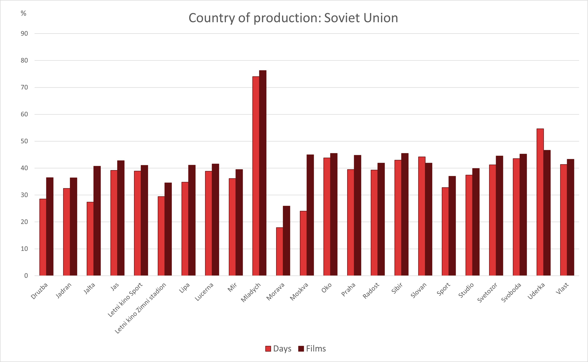
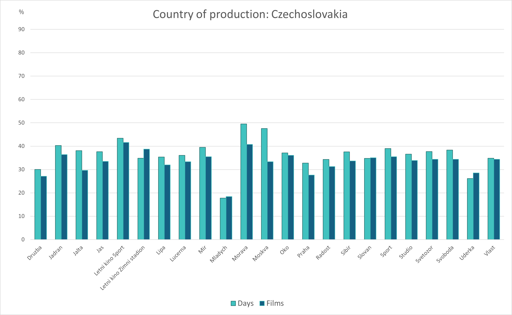
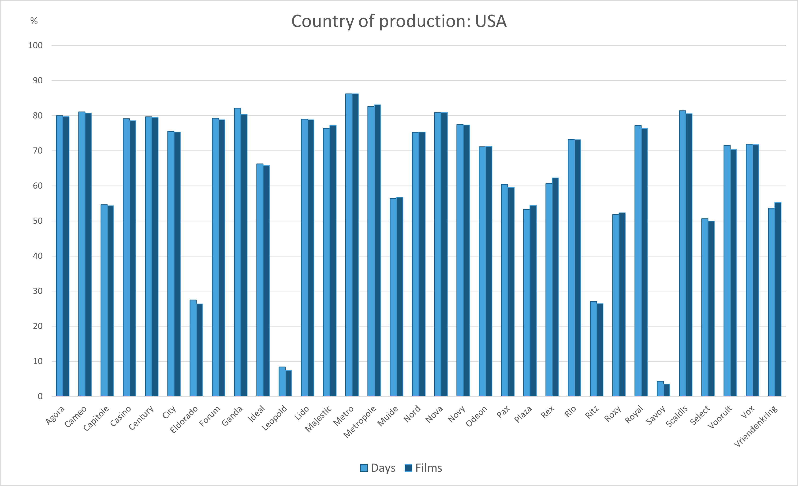

Czechoslovak and Soviet Film Screening Patterns in Brno Cinemas (1951–1953)
Brno – This comparison examines the proportions of Czechoslovak and Soviet film productions in terms of their presence in cinema schedules (dark green/red) and the number of screening days they accounted for (light green/red) in individual cinemas between 1951 and 1953. The graphs reveal that Czechoslovak films, while less frequently shown, contributed a larger share of total screening time in most cinemas. In contrast, Soviet films appeared more often in cinema schedules but occupied a smaller proportion of total screening time.

Caption: Soviet Production in Brno Cinemas. Comparison of length of screenings and number of films.

Caption: Czechoslovak Production in Brno Cinemas. Comparison of length of screenings and number of films.
Hollywood Film Screening Patterns in Ghent Cinemas (1951–1953)
Ghent – This comparison examines the proportions of Hollywood film productions in terms of their presence in cinema schedules (dark blue) and the number of screening days they accounted for (light blue) in individual cinemas between 1951 and 1953. The graphs indicate that the share of Hollywood productions in the total number of films closely aligns with their share of total screening time across all cinemas.
